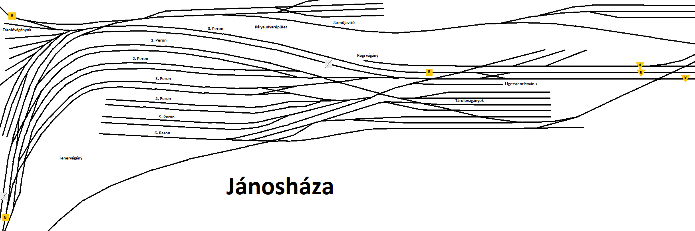
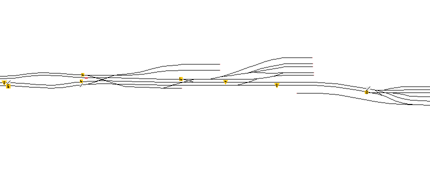
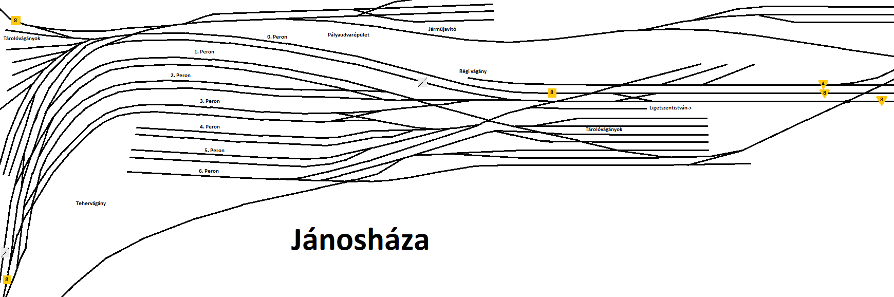
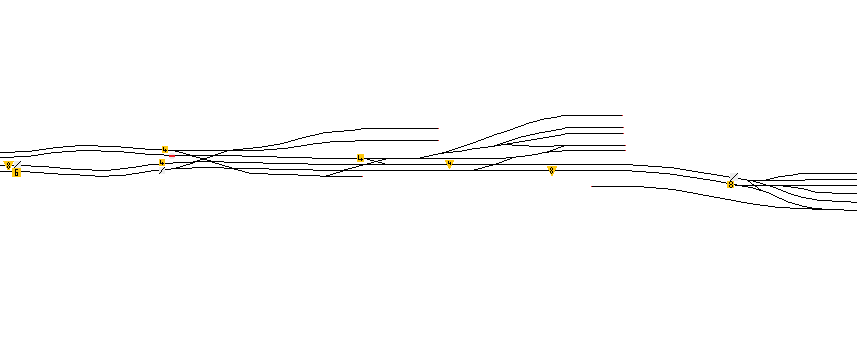

Jánosháza-Ligetszentistván térképe:
A H-EJLM vágányzári térképe

A H-EJLM Vasúti térképe

A H-EJLM Sebességhatár térképe

Jánosháza pályaudvar sebességkorlátozások
Ligetszentistván
Jánosháza-Ligetszentistván térképe:
Jánosháza pályaudvar sebességkorlátozások
Ligetszentistván
